User Delegation
Process Director features two methods of delegating tasks. Standard Delegation enables you to assign all tasks from a delegator to a specified delegate, automatically assigning the tasks to the delegate while the delegation is active. Shared Delegation enables you to share tasks, by enabling the delegate to complete tasks that are assigned to the delegator on an optional basis. Using Standard Delegation always assigns all tasks to the delegate, while Shared Delegation enables the delegate to view and complete tasks on an ad hoc basis.
Standard Delegation #
Tasks assigned to one user can be delegated to another user. When using standard delegation, all of the delegated tasks will be assigned directly to the delegated user until such time as the delegation is revoked. There are three primary ways in which delegation can be assigned, two of which are performed at the administrative level. The remaining delegation method can be performed by users by modifying their own profiles, and we will address this method first.
When a user delegates to another that is already running in the same step/activity, the original user is canceled and the other user is left running. When undelegating, there is an option that will allow the original canceled user to be restarted if that step/activity is still running. To enable this option, set the fEnableUndelegationRestart custom variable to "true". If this option is not set, then the delegated user's task will be canceled, but the original user's task won't be restarted, and the task will be canceled for both users.
For Process Director v4.03 and higher, the system will prevent users from delegating tasks to a user who is already delegating tasks to them. In other words, if User A is delegating tasks to User B, User B will be prevented from delegating tasks to User A. This loop checking only prevents a direct delegation loop between two users, and won't prevent indirect delegation loops that involve three or more persons.
For Process Director v5.26, delegation was extended to enable a disabled user to still delegate to another user. This will better handle implementations where a disabled user is listed in a form field that is being used to assign to a task. The task will have the delegate assigned to it so it can continue.
Delegation by the user
Users may delegate their own tasks to another user by modifying their user profile via the following procedure.
First, open the user information box by clicking the user menu icon located at the top left corner of the Process Director interface.
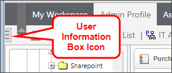
When you click the icon, the user information box will appear.

Once the user Information box appears, click the Edit Profile button to open your User Profile page. On the User Profile, there is a delegation picker displayed.
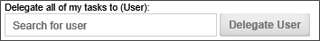
Select the User Picker to open the type ahead box and begin typing a user name to expand the type ahead dropdown containing the list of matching users. Select a user to which to delegate by choosing the user from the type ahead dropdown. You can use the arrow keys to scroll the selection cursor up and down, then press the [ENTER] key to make your selection, or you can select the user with your mouse.
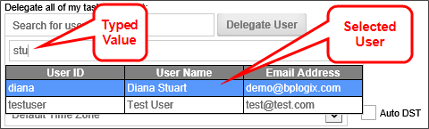
Once the user list type ahead has closed, the selected user will now appear in the delegation user picker. Confirm the delegation by clicking the Delegate User button.
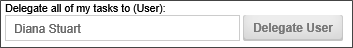
A confirmation dialog box will appear to ask you to confirm the delegation.

Click the OK button to confirm the delegation. The dialog box will close, the delegation will take effect.
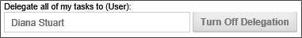
You can end the delegation by clicking the Turn Off Delegation button. Again, a dialog box will appear that asks you to confirm that you wish to turn off the delegation. Click the OK button to turn off delegation to the previously selected user.
When you have made the appropriate delegation decision, click the OK button at the bottom right of the User Profile screen to close it.
 The Standard Delegation functionality can be removed from the user profile page by setting the fTurnOffDelegation Custom Variable to "true" in the Custom Vars file.
The Standard Delegation functionality can be removed from the user profile page by setting the fTurnOffDelegation Custom Variable to "true" in the Custom Vars file.
Delegation by Administrators
Administrators can perform delegation on behalf of users by making the delegation change in the User Profile for a specific user, or in the User Administration section's Delegation page.
Edit User Profile
From the Users page of the User Administration area, open the Edit User screen of the user for which you wish to perform delegation. There is a User Picker labeled Delegate all tasks to (User).
Select the User Picker to open the type ahead box and begin typing a user name to expand the type ahead dropdown containing the list of matching users. Select a user to which to delegate by choosing the user from the type ahead dropdown. You can use the arrow keys to scroll the selection cursor up and down, then press the [ENTER] key to make your selection, or you can select the user with your mouse.
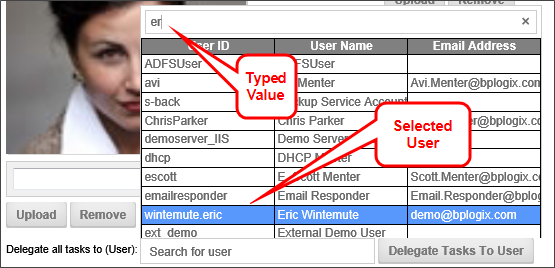
Once the user list type ahead has closed, the selected user will now appear in the delegation user picker. Confirm the delegation by clicking the Delegate Tasks to User button.
A confirmation dialog box will appear to ask you to confirm the delegation.
Click the OK button to confirm the delegation. The dialog box will close, the delegation will take effect.
You can end the delegation by clicking the Turn Off Delegation button. Again, a dialog box will appear that asks you to confirm that you wish to turn off the delegation. Click the OK button to turn off delegation to the previously selected user.
When you have made the appropriate delegation decision, click the OK button at the bottom right of the Edit User screen to close it.
Delegation Page
In the Delegation page of the User Administration section, you can set or remove multiple delegations. The screen also displays the currently active delegations in the User Delegations section of the page, as displayed in the example below.
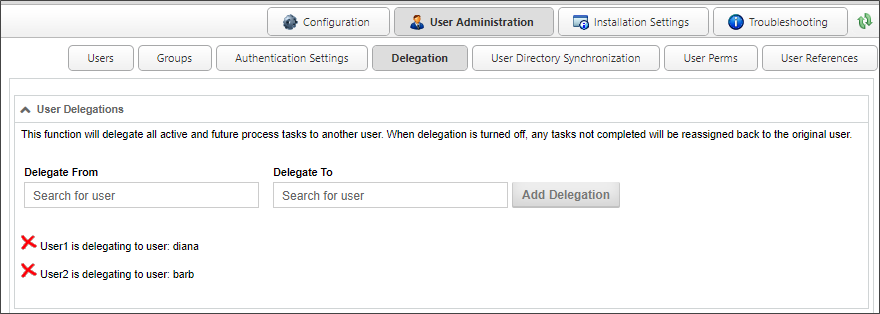
Setting Delegation
Use the User Pickers to select the from whom the tasks should be delegated, and the user to whom tasks should be delegated.
Once you have set both users for the delegation, click the Add Delegation button to create the delegation.
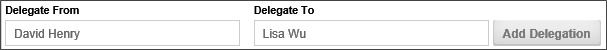
The delegation will be created immediately, and will appear in the delegation list at the bottom of the Delegation page, and a message will appear notifying you that the delegation has been successfully created.
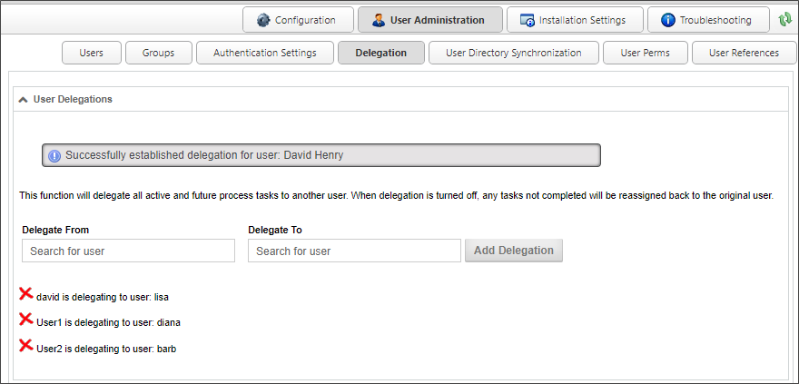
Removing Delegation
To remove a delegation, simply click the delete icon ( ) next to the delegation you wish to remove. The delegation will be canceled and a message will appear that notifies you that the delegation has been removed.
) next to the delegation you wish to remove. The delegation will be canceled and a message will appear that notifies you that the delegation has been removed.
Shared Delegation #
In addition to the standard delegation described above, users of Process Director v5.12 and higher can also implement shared delegation. Unlike standard delegation, shared delegation enables specified users to complete tasks for the delegator, but doesn't automatically assign tasks to the delegate. Instead, shared delegation gives the delegate access to the delegator's tasks, so that the delegate can complete them, if necessary or desired.
Delegates can be selected by the user, or by an administrator, using the procedures described below.
Delegation by the user
Users may share their own tasks to another user by modifying their user profile via the following procedure.
First, open the user information box by clicking the user menu icon located at the top left corner of the Process Director interface.
When you click the icon, the user information box will appear.
Once the user Information box appears, click the Edit Profile button to open your User Profile page. On the User Profile page, there is a Share my tasks with these users User Picker displayed.
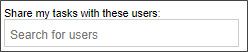
Select the User Picker to open the type ahead box and begin typing a user name to expand the type ahead dropdown containing the list of matching users. Select a user to which to delegate by choosing the user from the type ahead dropdown. You can use the arrow keys to scroll the selection cursor up and down, then press the [ENTER] key to make your selection, or you can select the user with your mouse.
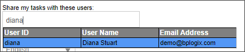
Once the user list type ahead has closed, the selected user will now appear in the delegation user picker, and tasks will be shared once the profile is saved.
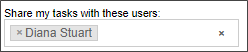
You can end the delegation by clicking the "X" icon that appears next to the delegates name, or clear ALL delegates by clicking the "X" icon that appears on the right side of the user picker.
When you have made the appropriate delegation decision, click the OK button at the bottom right of the User Profile screen to save and close the user profile.
The Shared Delegation functionality can be removed from the user profile page by setting the fTurnOffSharedDelegation Custom Variable to "true" in the Custom Vars file.
Delegation by Administrators
In the Delegation page of the User Administration section, you can set or remove multiple shared delegations. The screen also displays the currently active shared delegations in the Shared User Delegations section of the page, as displayed in the example below.
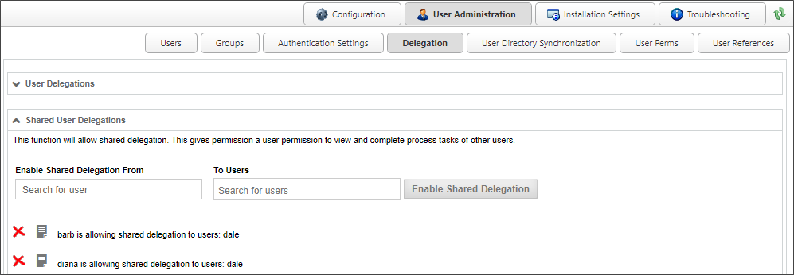
Setting Delegation
Use the User Pickers to select the from whom the tasks should be shared, and the user to whom tasks should be shared.
Once you have set both users for the delegation, click the Enable Shared Delegation button to create the delegation.
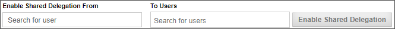
The delegation will be created immediately, and will appear in the delegation list at the bottom of the Delegation page, and a message will appear notifying you that the delegation has been successfully created.
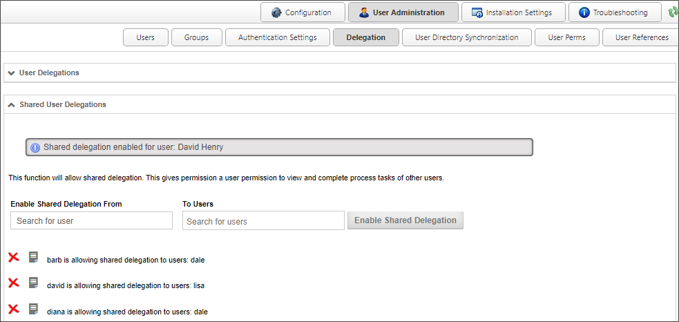
Removing Delegation
To remove a delegation, simply click the delete icon () next to the delegation you wish to remove. The delegation will be canceled and a message will appear that notifies you that the delegation has been removed.
Selecting Tasks for Delegation
In order to enable a delegate to retrieve and complete shared tasks, the tasks must be specifically designated as shared tasks. On the Advanced tab of both the User Timeline Activity and the User Workflow Step, there is an Allow Task Sharing property check box. This property check box must be checked or the task won't be shared with the delegate. This property enables you to implement task sharing on a per-task basis, which the default method for task sharing in the system.
You can, however, universally implement task sharing by setting the fSharedDelegationAllProcesses Custom Variable to "true". Conversely, you can completely disable task sharing by adding the appropriate disabling subroutine to the Custom Vars file.
Viewing Shared Delegations
Since tasks don't automatically get assigned to delegates when they are shared, the delegate must have a method to view the shared tasks that are available for completion. You must, therefore, provide a Task List Knowledge View to the delegates that applies a specific Filter to enable the delegates to view the shared tasks. On the Filter tab of the Knowledge View, you must use the Task >> Tasks for User system variable as the filter. This variable can also be accessed via the Task User system variable.
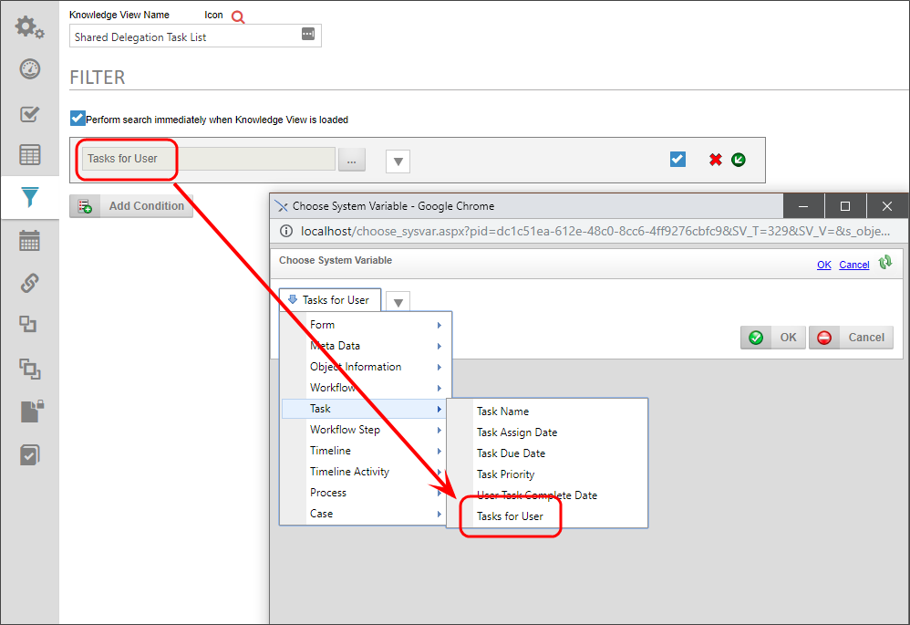
When the Knowledge View runs, this filter will display a dropdown to enable the delegate to choose the delegator for whom the tasks should be viewed. The dropdown will only show users who have active tasks that have been delegated to the current user.
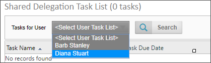
You can use the dropdown to select the desired delegator, then click the Search button to retrieve the tasks for that delegator. Once the tasks appear, the user can choose the tasks to complete, just as would be done in the default Task List.
For Process Director v5.26 and higher, Shared Delegation also supports delegation to unauthenticated users. This enables tasks assigned to anonymous users to appear in the task user dropdown in the Knowledge View filter, when the current user is the shared delegate owner in that activity.
Continue
Continue to the documentation for the User Directory Synchronization page.